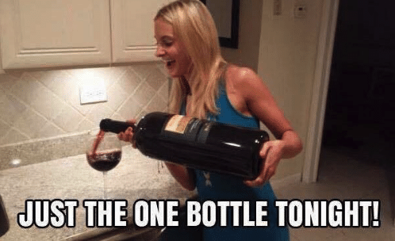

Wine Trivia!
Start
Answer the wine related questions!
Time Remaining: 120 seconds
What is the dominant grape in Chianti?
Cabernet Sauvignon
Nebbiolo
Sangiovese
Tempranillo
What does appellation refer to in France?
Place of origin
Wines with an apple flavor
Year the wine was made
Wines from the mountains
Reducing the grape crop usually does what for wine?
Lowers the alcohol level
Intensifies the flavor
Lowers the price
Dilutes the fruit qualities
Why are red wines usually aged in oak barrels?
Stainless steel tanks spoil wine
To improve the wine's ability to age
Oak barrels are cheaper
To greatly improve the color
What can salty foods do to tannic wine?
Diminish the tannins
Enhance the acidity
Make the wine seem sweet
Make the wine seem even more tannic
If a wine is 'hot' it most likely means what?
Was harvested during Summer
Has too high an alcohol content
Is served warmer than room temp
Is spicy
The word Reserve may only be placed on which US wines?
Rare vintages
Wines aged in French Oak
Wines aged at least 10 years
Any wine
Done!
Everything happens for a Riesling...
